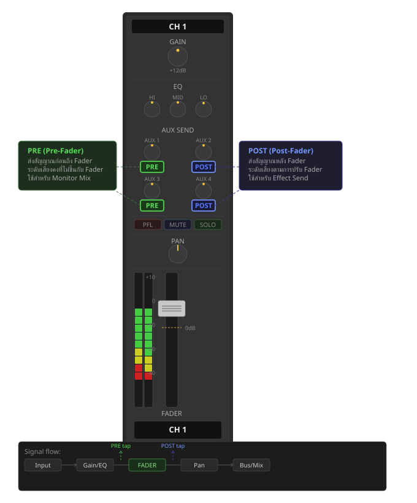
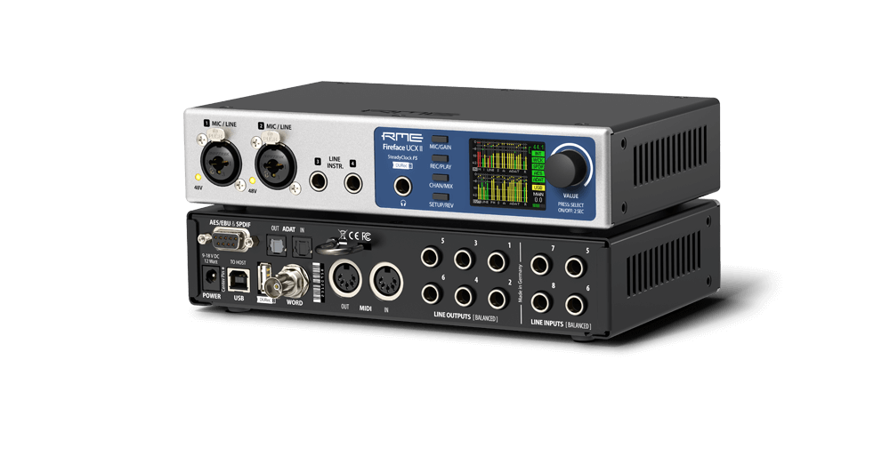

เทคนิค
Pre-Fader และ Post-Fader Sends — สร้างมิติให้ Mix ด้วย Time-Based Effects
Pre กับ Post Fader ต่างกันยังไง และทำไมถึงเปลี่ยนวิธีที่ Reverb กับ Delay ทำงาน — พร้อม Depth Map และ DAW Routing ครบ
Serum 2 มาแล้วหลังรอ 11 ปี, Granular Synth ตัวใหม่, Resonator ฟรีจาก MI Rings และเทรนด์ AI Plugin ที่เริ่มน่าใช้จริง
อ่านบทความ →
Pre กับ Post Fader ต่างกันยังไง และทำไมถึงเปลี่ยนวิธีที่ Reverb กับ Delay ทำงาน — พร้อม Depth Map และ DAW Routing ครบ
Cardioid, Omni, Figure-8, Supercardioid, Hypercardioid คืออะไร และเลือกใช้แบบไหนกับงานแบบไหน — อธิบายครบทุก polar pattern ในบทความเดียว

Serum 2 มาแล้วหลังรอ 11 ปี, granular synth ตัวใหม่, resonator ฟรีจาก MI Rings และเทรนด์ AI plugin ที่เริ่มน่าใช้จริง
ไม่มี monitor speaker ก็ mix ได้ดี ถ้ารู้จักข้อจำกัดของหูฟังและมีวิธีรับมือที่ถูกต้อง

เทคนิค New York Compression ที่ให้ได้ทั้งความหนักและ dynamic ในเวลาเดียวกัน ทำได้ใน DAW ทุกตัว
ตั้ง gain ผิดตั้งแต่แรก แก้ตอน mix ไม่ได้ — บทความนี้อธิบายตั้งแต่ preamp ไปจนถึง master bus
XY, ORTF, AB, Mid-Side, Blumlein หรือ Decca Tree — แต่ละแบบให้เสียงต่างกันยังไง และควรเลือกใช้กับงานแบบไหน

งงกับ TotalMix FX? ไม่ต้องกังวล — บทความนี้แนะนำแหล่งเรียนรู้ที่ดีที่สุดจากทาง RME โดยตรง พร้อมอธิบายว่าควรเริ่มต้นจากตรงไหนก่อน

เปลี่ยน Mainboard มาหลายรุ่น ผ่าน Windows มากี่เวอร์ชันก็จำไม่ได้ แต่ Sound Card ตัวเดิมยังทำงานกับ Windows ล่าสุดได้ครบ — 192 ช่อง MADI ไม่เคยพลาดกลางงาน

16 analog in / 20 analog out, Dante 64 channels redundant และ MADI ใน 1U rack — converter อ้างอิงสำหรับสตูดิโออาชีพ
Standalone mode, MIDI I/O, ADAT และ TotalMix FX เต็มรูปแบบ — UCX II คือ interface ที่ซื้อครั้งเดียวใช้ได้ตลอดชีวิต

188 channels, MADI, 12 Analog In/Out และ TotalMix FX เต็มรูปแบบ — UFX III คือยอดสุดของ RME lineup

60 channels, 4 preamps, USB 2.0 และ TotalMix FX ใน 1U rack — Fireface 802 FS คือ interface ที่ซื้อครั้งเดียวใช้ได้ยาวนาน

เล็กกว่านี้ไม่มีแล้ว แต่ไม่มีอะไรขาด — รีวิว RME Babyface Pro FS ฉบับครบถ้วน

Dante 64ch, MADI 64ch, 4 Gigabit Ethernet และ TotalMix FX ในเครื่องพกพา — Digiface Dante คือสะพานเชื่อมระหว่างโลก network audio กับ studio แบบดั้งเดิม

512 channels, Dante 2x Gigabit Ethernet, TotalMix FX 256x256 mixer — HDSPe AoX-D คือการ์ด PCIe ที่นำ network audio เข้าสู่ DAW โดยตรง

ใช้คู่กับ Sony FX3 ในงานคอนเสิร์ตและสัมภาษณ์ — double recording บันทึก 32-bit float ในตัว transmitter เสียงไม่ peak ไม่ว่าจะดังแค่ไหน และ Timecode sync อัตโนมัติ

Go ฟรีมาคู่ Pro Tools, Elements เริ่มต้นได้ในงบจำกัด, Pro ครบทุกฟีเจอร์ unmix และ restoration ระดับมืออาชีพ — เลือกให้ตรงกับงานของคุณ